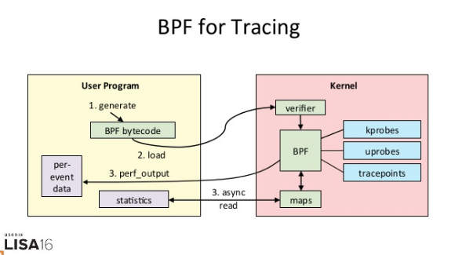
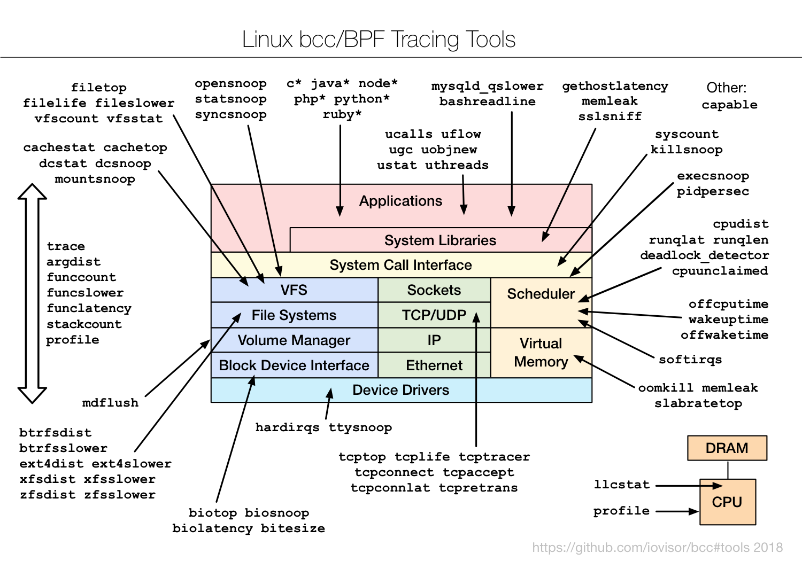
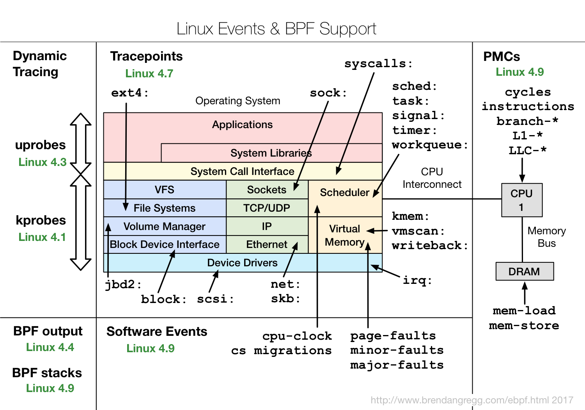
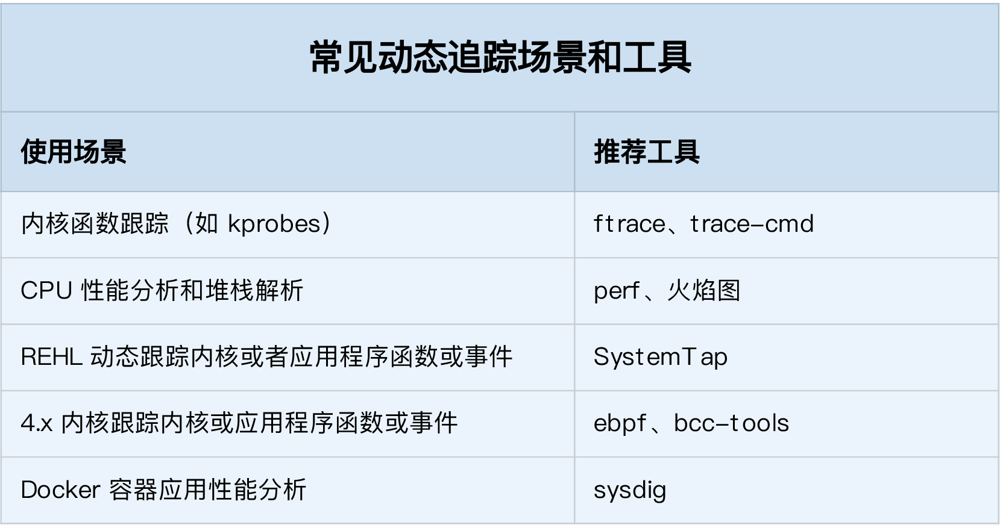

在 Linux 系统中，常见的动态追踪方法包括 ftrace、perf、eBPF 以及 SystemTap 等。上节课，我们具体学习了 ftrace 的使用方法。
perf
我们前面使用 perf record/top 时，都是先对事件进行采样，然后再根据采样数，评估各个函数的调用频率。实际上，perf 的功能远不止于此。比如，
- perf 可以用来分析 CPU cache、CPU 迁移、分支预测、指令周期等各种硬件事件；
- perf 也可以只对感兴趣的事件进行动态追踪。
同 ftrace 一样，你也可以通过 perf list ，查询所有支持的事件：
$ perf list
我们先来看第一个 perf 示例，内核函数 do_sys_open 的例子。你可以执行 perf probe 命令，添加 do_sys_open 探针：
$ perf probe --add do_sys_open
Added new event:
probe:do_sys_open (on do_sys_open)
You can now use it in all perf tools, such as:
perf record -e probe:do_sys_open -aR sleep 1
探针添加成功后，就可以在所有的 perf 子命令中使用。比如，上述输出就是一个 perf record 的示例，执行它就可以对 10s 内的 do_sys_open 进行采样：
$ perf record -e probe:do_sys_open -aR sleep 10
[ perf record: Woken up 1 times to write data ]
[ perf record: Captured and wrote 0.148 MB perf.data (19 samples) ]
而采样成功后，就可以执行 perf script ，来查看采样结果了：
$ perf script
perf 12886 [000] 89565.879875: probe:do_sys_open: (ffffffffa807b290)
sleep 12889 [000] 89565.880362: probe:do_sys_open: (ffffffffa807b290)
sleep 12889 [000] 89565.880382: probe:do_sys_open: (ffffffffa807b290)
sleep 12889 [000] 89565.880635: probe:do_sys_open: (ffffffffa807b290)
sleep 12889 [000] 89565.880669: probe:do_sys_open: (ffffffffa807b290)
strace 基于系统调用 ptrace 实现
- 由于 ptrace 是系统调用，就需要在内核态和用户态切换。当事件数量比较多时，繁忙的切换必然会影响原有服务的性能；
- ptrace 需要借助 SIGSTOP 信号挂起目标进程。这种信号控制和进程挂起，会影响目标进程的行为。
所以，在性能敏感的应用（比如数据库）中，我并不推荐你用 strace （或者其他基于 ptrace 的性能工具）去排查和调试。
在 strace 的启发下，结合内核中的 utrace 机制， perf 也提供了一个 trace 子命令，是取代 strace 的首选工具。相对于 ptrace 机制来说，perf trace 基于内核事件，自然要比进程跟踪的性能好很多。perf trace 的使用方法如下所示，跟 strace 其实很像：
$ perf trace ls
? ( ): ls/14234 ... [continued]: execve()) = 0
0.177 ( 0.013 ms): ls/14234 brk( ) = 0x555d96be7000
0.224 ( 0.014 ms): ls/14234 access(filename: 0xad98082 ) = -1 ENOENT No such file or directory
0.248 ( 0.009 ms): ls/14234 access(filename: 0xad9add0, mode: R ) = -1 ENOENT No such file or directory
0.267 ( 0.012 ms): ls/14234 openat(dfd: CWD, filename: 0xad98428, flags: CLOEXEC ) = 3
0.288 ( 0.009 ms): ls/14234 fstat(fd: 3</usr/lib/locale/C.UTF-8/LC_NAME>, statbuf: 0x7ffd2015f230 ) = 0
0.305 ( 0.011 ms): ls/14234 mmap(len: 45560, prot: READ, flags: PRIVATE, fd: 3 ) = 0x7efe0af92000
0.324 Dockerfile test.sh
( 0.008 ms): ls/14234 close(fd: 3</usr/lib/locale/C.UTF-8/LC_NAME> ) = 0
...
eBPF 和 BCC
ftrace 和 perf 的功能已经比较丰富了，不过，它们有一个共同的缺陷，那就是不够灵活，没法像 DTrace 那样通过脚本自由扩展。
而 eBPF 就是 Linux 版的 DTrace，可以通过 C 语言自由扩展（这些扩展通过 LLVM 转换为 BPF 字节码后，加载到内核中执行）。下面这张图，就表示了 eBPF 追踪的工作原理：

实际上，在 eBPF 执行过程中，编译、加载还有 maps 等操作，对所有的跟踪程序来说都是通用的。把这些过程通过 Python 抽象起来，也就诞生了 BCC（BPF Compiler Collection）。
BCC 把 eBPF 中的各种事件源（比如 kprobe、uprobe、tracepoint 等）和数据操作（称为 Maps），也都转换成了 Python 接口（也支持 lua）。这样，使用 BCC 进行动态追踪时，编写简单的脚本就可以了。
不过要注意，因为需要跟内核中的数据结构交互，真正核心的事件处理逻辑，还是需要我们用 C 语言来编写。
至于 BCC 的安装方法，在内存模块的缓存案例中，我就已经介绍过了。如果你还没有安装过，可以执行下面的命令来安装（其他系统的安装请参考这里）：
# Ubuntu
sudo apt-key adv --keyserver keyserver.ubuntu.com --recv-keys 4052245BD4284CDD
echo "deb https://repo.iovisor.org/apt/$(lsb_release -cs) $(lsb_release -cs) main" | sudo tee /etc/apt/sources.list.d/iovisor.list
sudo apt-get update
sudo apt-get install bcc-tools libbcc-examples linux-headers-$(uname -r)
# REHL 7.6
yum install bcc-tools
安装后，BCC 会把所有示例（包括 Python 和 lua），放到 /usr/share/bcc/examples 目录中：
$ ls /usr/share/bcc/examples
hello_world.py lua networking tracing
当然，BCC 软件包也内置了很多已经开发好的实用工具，默认安装到 /usr/share/bcc/tools/ 目录中，它们的使用场景如下图所示：

这些工具，一般都可以直接拿来用。而在编写其他的动态追踪脚本时，它们也是最好的参考资料。不过，有一点需要你特别注意，很多 eBPF 的新特性，都需要比较新的内核版本（如下图所示）。如果某些工具无法运行，很可能就是因为使用了当前内核不支持的特性。

SystemTap 和 sysdig
SystemTap 也是一种可以通过脚本进行自由扩展的动态追踪技术。在 eBPF 出现之前，SystemTap 是 Linux 系统中，功能最接近 DTrace 的动态追踪机制。不过要注意，SystemTap 在很长时间以来都游离于内核之外（而 eBPF 自诞生以来，一直根植在内核中）。
所以，从稳定性上来说，SystemTap 只在 RHEL 系统中好用，在其他系统中则容易出现各种异常问题。当然，反过来说，支持 3.x 等旧版本的内核，也是 SystemTap 相对于 eBPF 的一个巨大优势。
sysdig 则是随着容器技术的普及而诞生的，主要用于容器的动态追踪。sysdig 汇集了一些列性能工具的优势，可以说是集百家之所长。我习惯用这个公式来表示 sysdig 的特点： sysdig = strace + tcpdump + htop + iftop + lsof + docker inspect。而在最新的版本中（内核版本 >= 4.14），sysdig 还可以通过 eBPF 来进行扩展，所以，也可以用来追踪内核中的各种函数和事件。
如何选择追踪工具
可以先自己思考区分一下，不同场景的工具选择问题。比如：
- 在不需要很高灵活性的场景中，使用 perf 对性能事件进行采样，然后再配合火焰图辅助分析，就是最常用的一种方法；
- 而需要对事件或函数调用进行统计分析（比如观察不同大小的 I/O 分布）时，就要用 SystemTap 或者 eBPF，通过一些自定义的脚本来进行数据处理。

小结
- 在新版的内核中，eBPF 和 BCC 是最灵活的动态追踪方法；
- 而在旧版本内核中，特别是在 RHEL 系统中，由于 eBPF 支持受限，SystemTap 往往是更好的选择。